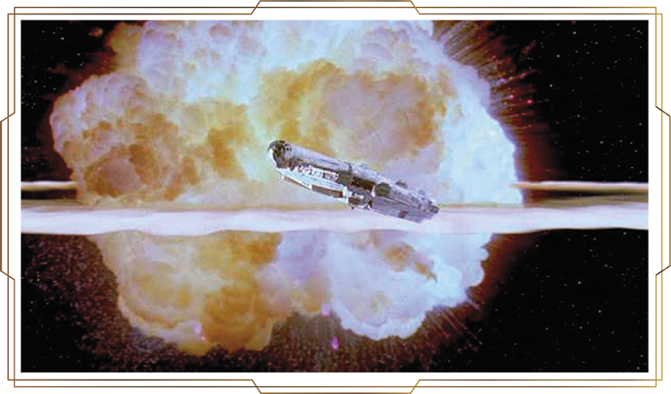
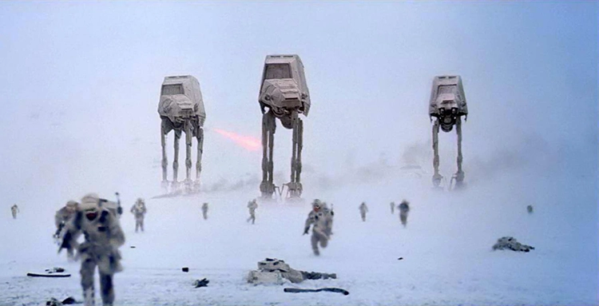

John Williams posant avec C-3PO (date : sûrement en 1980)
John Williams est un compositeur américain né à New York. Il a composé la musique de 51 films différents, dont les films Star Wars. Il a fait plusieurs études dans des école de musiques certifiées. Il sait jouer de plusieurs instruments. Il est chef d'orchestre, pianiste et compositeur.
George Lucas à Venise en 2009
L’Etoile noire a été détruite mais l’Empire continue d’avoir une emprise sur la galaxie. L’Empire poursuit sa lutte acharnée contre l’Alliance rebelle. Les rebelles, basés sur la planète Hoth, doivent faire face à une attaque des troupes impériales.
Destruction de l'étoile noire
Image de la bataille de Hoth
« The Imperial March » (La Marche Impériale) a été inspirée de « La Marche Funèbre » de Chopin, de « The Planets » de Gustav Holst et « La Grande Marche de Medjidie » de August Ritter Von Adelburg. Le rythme lourd et grave des instruments rend la mélodie majestueuse et imposante en même temps.